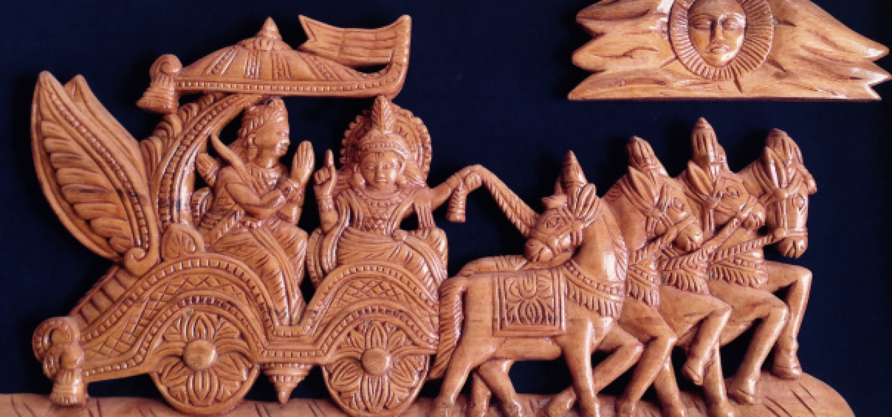
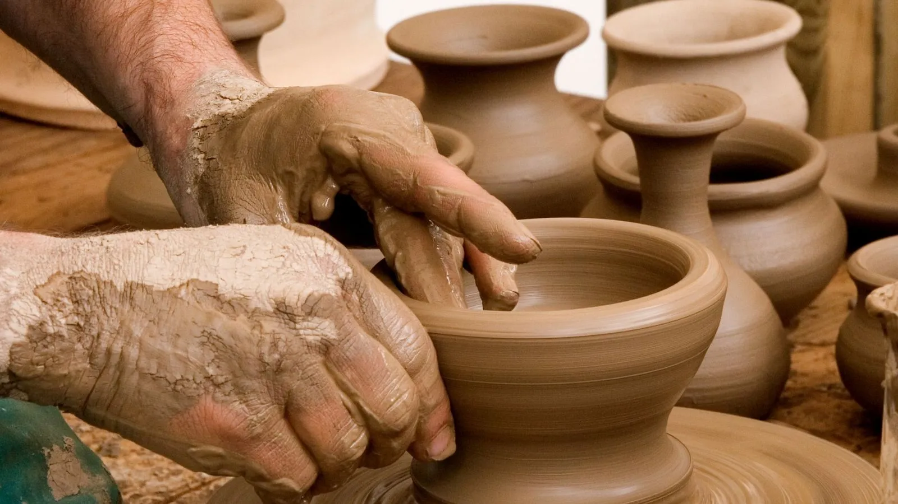
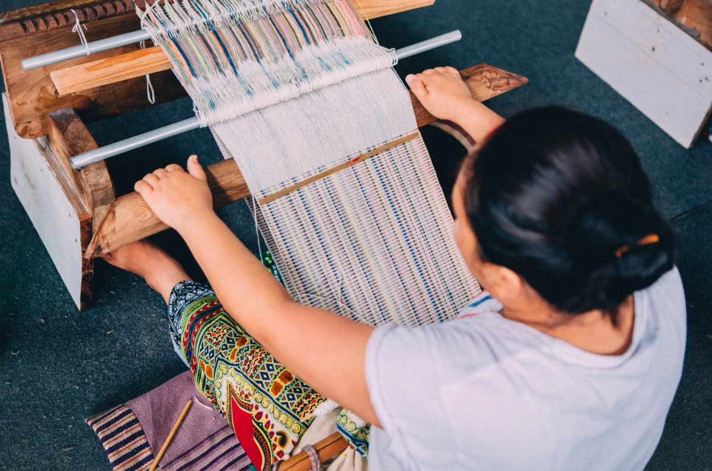
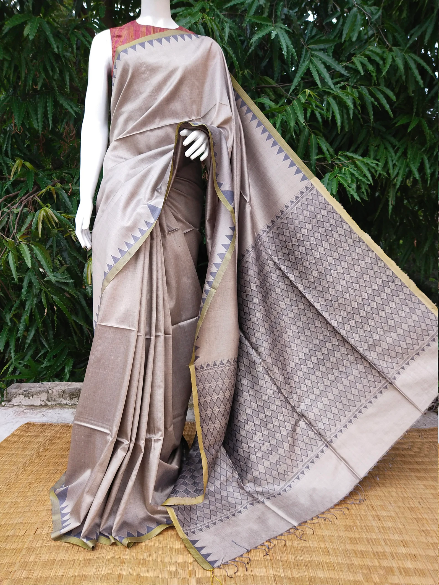

Famous Art and Crafts
Madhya Pradesh is renowned for its exquisite art and craft forms, which are a vibrant reflection of the state’s rich cultural history. Here are some of the most famous traditional crafts from Gujarat.

Bastar Arts:
is an India-based manufacturer, supplier, and exporter of Bell Metal and Wrought Iron Handicrafts.Bastar Arts also houses one of the world's largest collections of Gond paintings.

Pottery:
pottery tradition is rooted in centuries-old techniques that have been meticulously passed down through generations of skilled artisans. Hand-building methods such as coiling, slab construction, and molding form the foundation of their craft. These techniques not only reflect the artisan’s expertise but also embody a deep connection to the land and its resources..

Weaving:
The weaving culture in Bhopal is a reflection of the region’s vibrant and artistic heritage. The weavers here create intricate textiles, especially known for their beautiful Zari (metallic thread) work and handloom creations.
